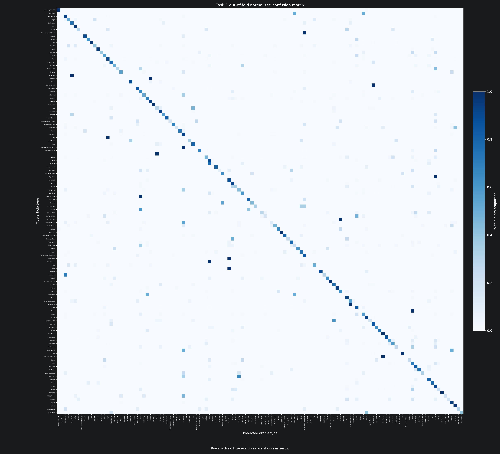
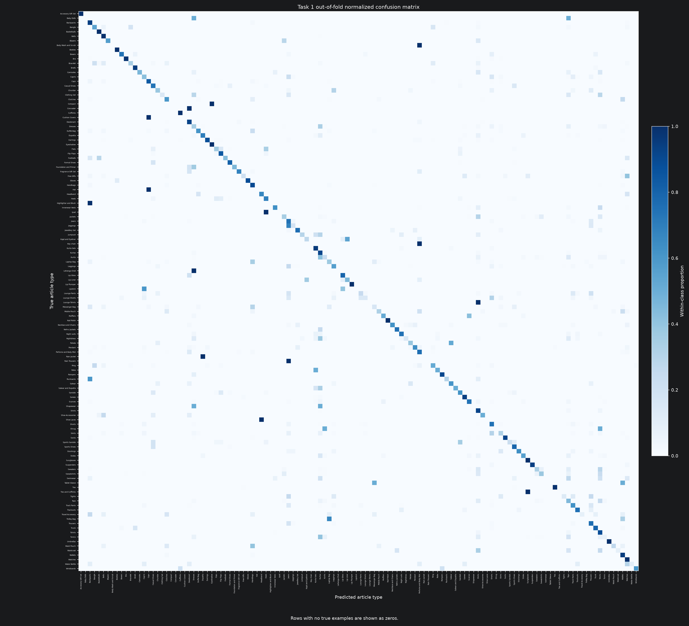

32,773
labelled development products
These rows are used inside five saved training and validation folds.
Fashion intelligence · 124-way image classification
Task 1 turns one product image into one articleType label. We tested a scratch CNN against two classic shape-based methods, using the same safe five-fold split for every final comparison.
Development decision complete
In plain words
The model sees pixels only. It must pick one name from 124 choices, such as “Tshirts”, “Watches”, or “Handbags”. The hard part is that some names have thousands of examples while others have only one.
32,773
labelled development products
These rows are used inside five saved training and validation folds.
124
article-type classes
All labels stay in the score, even when a class is extremely rare.
5
final model candidates
Three CNN candidates, HOG + KNN, and HOG + linear SVM.
The plain CNN won mean macro-F1, but mild unweighted augmentation was frozen for its stronger stability and much lower fold validation loss. This is a stability trade-off, not a macro-F1 win.
The selected CNN scored F1 = 0 for 21 classes. Most of these classes have tiny support. The result is useful, but rare-item performance is not solved.
Data and safety
Fair comparison matters more than a lucky score. Every model reads data/processed/splits.csv. Product-family groups do not cross folds, and the holdout stays locked until Notebook 06.
32,773
Used for model building and five-fold comparison.
5,778
Not used to choose Task 1’s winner.
61
Kept away because of duplicate or label risks.
The images are tiny: normally 60 × 80 pixels. There are also 294 grayscale files. The largest class, Tshirts, has 5,748 products. Several classes have one product. Twelve classes can appear in a validation fold while being absent from that fold’s training rows. No model can learn a class it has never seen.
Shared method
The same seed, folds, class list, and main metric are fixed before comparing models. This makes the result about the model choice, not a changed test.
Scores each class, then gives every class the same weight. This is the decision metric because the data has a very long rare tail.
Gives common classes more weight. It tells us how the model behaves on the typical catalogue mix.
Top-1 asks whether the first guess is right. Top-5 asks whether the right label is anywhere in the first five guesses.
Experiment choices
The experiment set covers learned image features, hand-built shape features, a local neighbour rule, a linear boundary, and one controlled augmentation test.
Candidate A
Five 5 × 5 convolution layers learn colour, edge, texture, and shape clues directly from RGB images. The model has 475,516 trainable parameters, a 128-unit hidden layer, and 124 outputs. It uses unweighted cross-entropy, Adam, OneCycle learning rate, 20 epochs, batch size 128, maximum learning rate 0.001, weight decay 0.00001, gradient clipping at 1.0, and seed 2753.
Why: the assignment needs a model trained from scratch. A small network matches the tiny 60 × 80 inputs and gives a clear learned baseline without pretrained weights.
Controlled test
The control makes no random change. The test adds horizontal flips, ±5° rotation, ±5% movement, 0.95–1.05 scale, and 0.9–1.1 brightness and contrast.
Question: does this help mean macro-F1 without making folds unstable?
Candidate B
HOG turns each grayscale image into edge-direction counts. KNN predicts from nearby feature vectors.
Why: fashion shapes are strong clues, and KNN makes very few shape assumptions.
Candidate C
The same HOG features feed a linear separator. Balanced class weights were tested to give rare classes more influence.
Why: it checks whether a simple global boundary beats local neighbour voting.
Classic tuning
16-pixel cells make 288 features. 10-pixel cells make 1,260 features. Fine HOG won. KNN tried k = 3, 5, 11 with uniform or distance votes. SVM tried C = 0.1, 1, 10 with normal or balanced weights.
All saved experiment results
Mean ± standard deviation answers the planned five-fold question. OOF means “out of fold”: every development product is scored once by a model that did not train on it.
| Candidate | Preprocessing | Loss | Macro-F1 mean | SD | Weighted F1 | Top-1 | Top-5 |
|---|---|---|---|---|---|---|---|
| Plain unweighted | No augmentation | Unweighted CE | 0.5315 | 0.0331 | 0.8381 | 84.22% | 97.80% |
| Mild augmented unweighted | Mild augmentation | Unweighted CE | 0.5218 | 0.0158 | 0.8373 | 84.29% | 98.09% |
| Mild augmented balanced weighted | Mild augmentation | Balanced weighted CE | 0.4564 | 0.0181 | 0.7139 | 69.15% | 95.25% |
Loss is reported from the fold rows below because comparison.csv has no validation-loss mean.
| Run ID | Fold | Candidate | Preprocessing | Loss ID | Macro-F1 | Weighted F1 | Top-1 | Top-5 | Loss |
|---|---|---|---|---|---|---|---|---|---|
| task1-cnn-task1_cnn_no_aug_unweighted_v1-f0-s2753-2b671c263f75 | 0 | Plain unweighted | No augmentation | Unweighted CE | 0.4981 | 0.8345 | 83.78% | 97.79% | 1.0721 |
| task1-cnn-task1_cnn_no_aug_unweighted_v1-f1-s2753-326863573f92 | 1 | Plain unweighted | No augmentation | Unweighted CE | 0.5195 | 0.8445 | 84.82% | 97.90% | 1.0587 |
| task1-cnn-task1_cnn_no_aug_unweighted_v1-f2-s2753-4a2ad5b813b3 | 2 | Plain unweighted | No augmentation | Unweighted CE | 0.5176 | 0.8265 | 83.21% | 97.34% | 1.2538 |
| task1-cnn-task1_cnn_no_aug_unweighted_v1-f3-s2753-cbd14501bc35 | 3 | Plain unweighted | No augmentation | Unweighted CE | 0.5370 | 0.8397 | 84.33% | 97.88% | 1.1685 |
| task1-cnn-task1_cnn_no_aug_unweighted_v1-f4-s2753-15a400dd82cb | 4 | Plain unweighted | No augmentation | Unweighted CE | 0.5852 | 0.8453 | 84.95% | 98.08% | 1.1111 |
| task1-cnn-task1_cnn_mild_aug_unweighted_v1-f0-s2753-f2c7e21f5564 | 0 | Mild augmented unweighted | Mild augmentation | Unweighted CE | 0.5081 | 0.8345 | 84.08% | 97.96% | 0.5818 |
| task1-cnn-task1_cnn_mild_aug_unweighted_v1-f1-s2753-f2c26f1489bd | 1 | Mild augmented unweighted | Mild augmentation | Unweighted CE | 0.5216 | 0.8436 | 84.87% | 98.41% | 0.5543 |
| task1-cnn-task1_cnn_mild_aug_unweighted_v1-f2-s2753-692a6f40bb5d | 2 | Mild augmented unweighted | Mild augmentation | Unweighted CE | 0.5233 | 0.8299 | 83.66% | 97.85% | 0.6793 |
| task1-cnn-task1_cnn_mild_aug_unweighted_v1-f3-s2753-5a03cc0c3f2d | 3 | Mild augmented unweighted | Mild augmentation | Unweighted CE | 0.5089 | 0.8346 | 83.80% | 98.06% | 0.5980 |
| task1-cnn-task1_cnn_mild_aug_unweighted_v1-f4-s2753-46fe12567d54 | 4 | Mild augmented unweighted | Mild augmentation | Unweighted CE | 0.5471 | 0.8441 | 85.05% | 98.19% | 0.6048 |
| task1-cnn-task1_cnn_mild_aug_balanced_weighted_v1-f0-s2753-3ee5a5fe81b3 | 0 | Mild augmented balanced weighted | Mild augmentation | Balanced weighted CE | 0.4521 | 0.7145 | 69.08% | 95.61% | 1.0636 |
| task1-cnn-task1_cnn_mild_aug_balanced_weighted_v1-f1-s2753-bbb859949c56 | 1 | Mild augmented balanced weighted | Mild augmentation | Balanced weighted CE | 0.4675 | 0.7278 | 70.64% | 95.62% | 1.0633 |
| task1-cnn-task1_cnn_mild_aug_balanced_weighted_v1-f2-s2753-0b41fbf934d5 | 2 | Mild augmented balanced weighted | Mild augmentation | Balanced weighted CE | 0.4278 | 0.6723 | 65.01% | 93.93% | 1.2627 |
| task1-cnn-task1_cnn_mild_aug_balanced_weighted_v1-f3-s2753-4755f42b965d | 3 | Mild augmented balanced weighted | Mild augmentation | Balanced weighted CE | 0.4596 | 0.7204 | 69.59% | 95.70% | 1.0896 |
| task1-cnn-task1_cnn_mild_aug_balanced_weighted_v1-f4-s2753-89abf6776fe5 | 4 | Mild augmented balanced weighted | Mild augmentation | Balanced weighted CE | 0.4751 | 0.7344 | 71.44% | 95.39% | 1.0764 |
Source: fold_metrics.csv
| Candidate | Preprocessing | Loss | Macro-F1 | Weighted F1 | Top-1 | Top-5 |
|---|---|---|---|---|---|---|
| Plain unweighted | No augmentation | Unweighted CE | 0.5569 | 0.8392 | 84.22% | 97.80% |
| Mild augmented unweighted | Mild augmentation | Unweighted CE | 0.5408 | 0.8386 | 84.29% | 98.09% |
| Mild augmented balanced weighted | Mild augmentation | Balanced weighted CE | 0.4664 | 0.7145 | 69.15% | 95.25% |
Source: oof_metrics.csv
Fold 0 selected one KNN and one SVM setting. This was a tuning step, not the final comparison.
| Candidate | HOG | Family | Fold | Macro-F1 | Weighted F1 | Top-1 | Top-5 |
|---|---|---|---|---|---|---|---|
| coarse · KNN k5 distance | ppc16 | KNN | 0 | 0.4343 | 0.7441 | 75.92% | 90.33% |
| coarse · SVM C1 normal | ppc16 | SVM | 0 | 0.4023 | 0.7352 | 75.64% | 94.72% |
| fine · KNN k5 distance | ppc10 | KNN | 0 | 0.4701 | 0.7855 | 79.75% | 92.32% |
| fine · SVM C1 normal | ppc10 | SVM | 0 | 0.4510 | 0.7891 | 79.89% | 93.58% |
| fine · KNN k3 uniform | ppc10 | KNN | 0 | 0.4591 | 0.7782 | 78.83% | 89.03% |
| fine · KNN k3 distance | ppc10 | KNN | 0 | 0.4897 | 0.7892 | 79.84% | 89.03% |
| fine · KNN k5 uniform | ppc10 | KNN | 0 | 0.4489 | 0.7789 | 79.14% | 92.32% |
| fine · KNN k11 uniform | ppc10 | KNN | 0 | 0.3983 | 0.7620 | 78.18% | 95.41% |
| fine · KNN k11 distance | ppc10 | KNN | 0 | 0.4229 | 0.7680 | 78.71% | 95.39% |
| fine · SVM C0.1 normal | ppc10 | SVM | 0 | 0.4434 | 0.7855 | 80.19% | 95.50% |
| fine · SVM C0.1 balanced | ppc10 | SVM | 0 | 0.4624 | 0.7822 | 77.81% | 94.63% |
| fine · SVM C1 balanced | ppc10 | SVM | 0 | 0.4437 | 0.7817 | 77.90% | 92.57% |
| fine · SVM C10 normal | ppc10 | SVM | 0 | 0.4190 | 0.7650 | 76.97% | 90.23% |
| fine · SVM C10 balanced | ppc10 | SVM | 0 | 0.4179 | 0.7621 | 75.78% | 89.46% |
Every row also has a full registered run ID in classical_tuning.csv.
| Candidate | HOG | Family | Macro-F1 mean | SD | Weighted F1 | Top-1 | Top-5 |
|---|---|---|---|---|---|---|---|
| KNN k3 distance | ppc10 | KNN | 0.5023 | 0.0140 | 0.7860 | 79.55% | 89.52% |
| SVM C0.1 balanced | ppc10 | SVM | 0.4889 | 0.0165 | 0.7802 | 77.65% | 94.46% |
The source also keeps the standard deviations for every supporting metric: classical_comparison.csv.
| Run ID | Fold | Candidate | HOG | Family | Macro-F1 | Weighted F1 | Top-1 | Top-5 |
|---|---|---|---|---|---|---|---|---|
| …KNN…f0…9f5f95 | 0 | KNN k3 | ppc10 | KNN | 0.4897 | 0.7892 | 79.84% | 89.03% |
| …KNN…f1…8e4bec | 1 | KNN k3 | ppc10 | KNN | 0.4969 | 0.7823 | 79.15% | 89.84% |
| …KNN…f2…909aa6 | 2 | KNN k3 | ppc10 | KNN | 0.4963 | 0.7803 | 79.03% | 89.20% |
| …KNN…f3…1af447 | 3 | KNN k3 | ppc10 | KNN | 0.5026 | 0.7868 | 79.55% | 89.93% |
| …KNN…f4…a1d500 | 4 | KNN k3 | ppc10 | KNN | 0.5260 | 0.7915 | 80.19% | 89.61% |
| …SVM…f0…b428eb | 0 | SVM C0.1 | ppc10 | SVM | 0.4624 | 0.7822 | 77.81% | 94.63% |
| …SVM…f1…986fb4 | 1 | SVM C0.1 | ppc10 | SVM | 0.5023 | 0.7847 | 77.91% | 94.39% |
| …SVM…f2…503f56 | 2 | SVM C0.1 | ppc10 | SVM | 0.5005 | 0.7721 | 76.91% | 93.85% |
| …SVM…f3…0cb9f2 | 3 | SVM C0.1 | ppc10 | SVM | 0.4835 | 0.7853 | 78.14% | 94.89% |
| …SVM…f4…b60d15 | 4 | SVM C0.1 | ppc10 | SVM | 0.4957 | 0.7770 | 77.46% | 94.54% |
Source: classical_fold_metrics.csv
| Candidate | Macro-F1 | Weighted F1 | Top-1 | Top-5 |
|---|---|---|---|---|
| KNN k3 distance | 0.5269 | 0.7872 | 79.55% | 89.52% |
| SVM C0.1 balanced | 0.5059 | 0.7808 | 77.65% | 94.46% |
Source: classical_oof_metrics.csv
Failure analysis
High accuracy is not the full story. The gap between about 84% accuracy and about 0.53 macro-F1 shows that common products are much easier than rare products.
21 / 124
selected CNN classes with OOF F1 = 0
The selected mild unweighted CNN has 21 zero-F1 classes. The balanced weighted CNN has 20, but its overall metrics are much worse.
0.0158
selected CNN fold SD
The mildly augmented unweighted CNN has about 52% lower fold variation than the plain CNN’s 0.0331.
98.09%
augmented CNN Top-5
Augmentation is often close to the answer, but its first-choice rare-class balance is still slightly worse.



Development decision
This is the model to carry into the locked final evaluation. It is frozen for stability, not because it wins mean macro-F1.
The plain CNN wins mean macro-F1 at 0.5315 ± 0.0331. Mild unweighted augmentation is lower at 0.5218 ± 0.0158, so this is not a macro-F1 win. It is frozen because its fold variation is about 52% lower and its mean validation loss from the five fold rows is about 0.60 rather than 1.13.
Balanced weighting is rejected: its mean macro-F1 is only 0.4564 ± 0.0181, with worse weighted F1, Top-1, and Top-5 scores. The selected model has 21 zero-F1 classes; balanced weighting has 20, but that small count change does not outweigh its worse overall metrics.
The 0.0097 macro-F1 gap between the plain and selected CNNs is a trade-off. This development choice values stability and lower loss; it does not prove augmentation always improves macro-F1.
Freeze this choice. Refit using all allowed development data. Then evaluate once on the locked holdout in Notebook 06. Report rare-class failures, speed, and model size with the final score.
KNN is a useful fallback baseline. It reaches 0.5023 mean macro-F1 without neural training, but it needs stored training features at prediction time and has weaker Top-1 and Top-5 results.
task1_cnn_mild_aug_unweighted_v1 with task1_small_cnn_v1 into the independent final evaluation. Do not unlock the holdout to revisit this development choice.Traceability
The page rounds numbers for reading. Raw decimals, run IDs, predictions, and per-class results remain in the saved project files below.
Evidence status: 32 complete experiment runs and 6 complete smoke runs are registered for Task 1. The report’s three CNN evidence tables are checked against their CSV sources; classic-model tables remain traceability references.